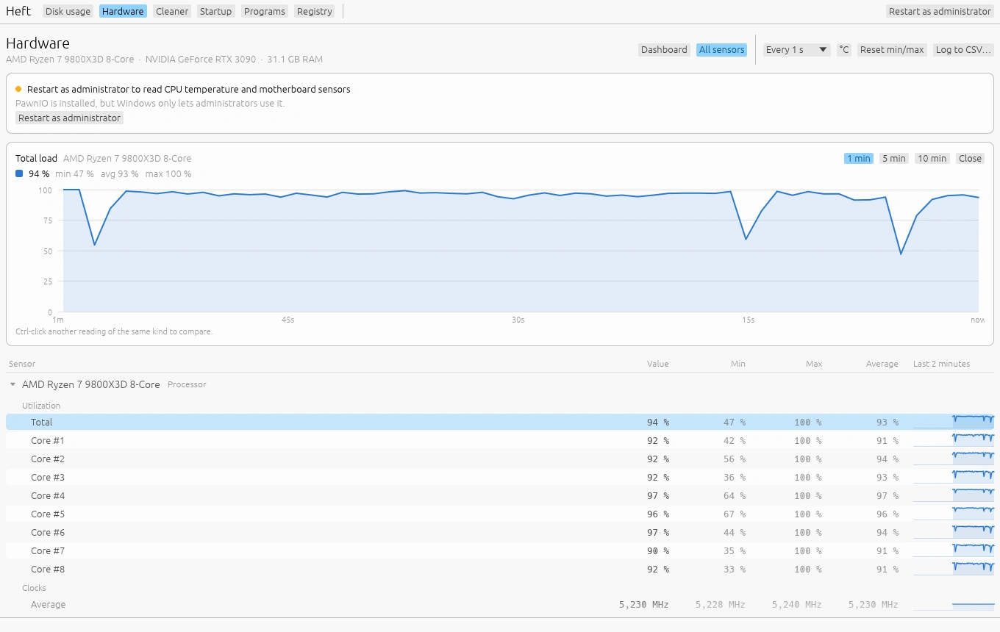

Hardware monitor
Windows · LinuxThe Hardware page shows temperatures, load, clocks, power and fans for every device in your computer, live, with history.
Dashboard

The top row shows what most people want to know: CPU temperature and load, GPU temperature and load, memory in use, and the hottest drive. Below it, every device gets a card with its most useful readings.
Temperatures are labeled Normal, Warm, Hot or Too hot. Heft uses the device's own limits where it reports them, and sensible defaults otherwise. Hover over the label to see the thresholds.
All sensors
Switch to All sensors for a table of every reading, grouped by device, like HWMonitor: the current value, the minimum, maximum and average since Heft started, and a small chart of the last two minutes. Reset min/max starts the counts over, which is handy before a stress test or a game.
History charts


Click any reading, on the dashboard or in the table, to open a chart of its history over the last 1, 5 or 10 minutes, with its minimum, average and maximum. Ctrl-click more readings of the same kind, such as two temperatures or several cores, to compare them. Heft keeps ten minutes of history for every reading.
Logging and settings
- Log to CSV writes every reading to a spreadsheet file while Heft runs. The button shows how many rows it has written; click it again to stop.
- °C / °F switches between Celsius and Fahrenheit.
- Every 1 s sets how often Heft reads the sensors: every 0.5, 1, 2 or 5 seconds.
Heft starts reading sensors the first time you open the Hardware page, and keeps collecting history from then on, even while you're on another page. If you never open it, Heft never reads a sensor.
What Heft can read
Windows, with nothing extra installed:
- CPU load and clock speed, per core;
- NVIDIA graphics cards through NVIDIA's own library (temperature, load, clocks, power, fans, memory), and other graphics cards through Windows' graphics kernel, the same source Task Manager uses;
- drive temperatures, plus SMART data for older SATA drives when run as administrator;
- disk and network throughput, memory and batteries.
Windows, with PawnIO installed and Heft running as administrator, also: CPU temperature and package power on AMD Zen and Intel processors, and fans, fan drive, voltages and board temperatures from the Nuvoton sensor chips (NCT679x and NCT6701D) on most ASUS and ASRock motherboards.
Linux: the same page from /proc and /sys/class/hwmon, with no extra driver. What you see depends on which sensor drivers your kernel loads.
macOS isn't supported yet.
CPU temperature and board sensors on Windows
Windows doesn't let normal programs read the CPU's temperature or the motherboard's fan and voltage chip. That needs a kernel driver. Heft uses PawnIO, a signed, open-source driver that LibreHardwareMonitor and FanControl also use. Heft never installs drivers itself, so this step is up to you.
- Install PawnIO from pawnio.eu, or from a terminal:
winget install namazso.PawnIO - Open Heft's Hardware page and choose Restart as administrator. Windows only lets administrators use the driver.
Heft loads three of PawnIO's official signed modules: one each for AMD and Intel processors, and one for the motherboard's sensor chip. It only reads sensor registers and never touches fan control. It also waits its turn on the chip, so it can run alongside other monitoring tools without them getting in each other's way.
Without PawnIO, the page still works and says what's missing. Gigabyte boards (ITE chips) and MSI boards with the NCT6687D chip aren't supported yet.
To print every reading in a terminal, run heft --sensors. See Command line.